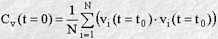
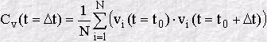
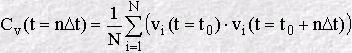
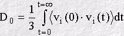

The Velocity Autocorrelation Function
The Velocity Autocorrelation Function
The velocity autocorrelation function (VAF) is a prime example of a time dependent correlation function, and is important because it reveals the underlying nature of the dynamical processes operating in a molecular system. It is constructed as follows.
At a chosen origin in time (i.e. some moment when we chose to start the calculation) we store all three components of the velocity vi, where:
vi = (vx(t0), vy(t0), vz(t0))i
for every atom (i) in the system. We can already calculate the first contribution to the VAF, corresponding to time zero (i.e. t=0). This is simply the average of the scalar products vi · vi for all atoms:

At the next time step in the simulation t = t0 + Δt; and the corresponding velocity for each atom is:
Vi = (Vx(t0 + Δt), Vy(t0 + Δt), Vz(t0 + Δt))i
and we can calculate the next point of the VAF as:

We can repeat this procedure at each subsequent time step and so obtain a sequence of points in the VAF, as follows:

or (for short):
Cv(t) = ⟨ vi(0) · vi(t) ⟩
Though this can be continued forever, we generally stop after a fixed value of n, and start again to calculate another VAF, beginning at a new time origin. The final VAF can then be an average of all the VAF's we have calculated in the course of our simulation. The result is usually plotted as a function of time, for example:

So far, so good, but what could such a function tell us about the molecular system?
Consider a single atom at time zero. At that instant the atom (i) will have a specific velocity vi. If the atoms in the system did not interact with each other, then Newton's Laws of motion tell us that the atom would retain this velocity for all time. This of course means that all our points Cv(t) would have the same value, and if all the atoms behaved like this, the plot would be a horizontal line. It follows that a VAF plot that is almost horizontal, implies very weak forces are acting in the system.
On the other hand, what happens to the velocity if the forces are small but not negligible? Then we would expect both its magnitude and direction to change gradually under the influence of these weak forces. In this case we expect the scalar product of Vi(t=t0) with Vi(t=t0+nΔt) to decrease on average, as the velocity is changed. (In statistical mechanics we say that the velocity decorrelates with time, which is the same as saying the atom 'forgets' what its initial velocity was.) In such a system, the VAF plot is a simple exponential decay, revealing the presence of weak forces slowly destroying the velocity correlation. Such a result is typical of the molecules in a gas.
What happens when the interatomic forces are strong? Strong forces are most evident in high density systems, such as solids and liquids, where atoms are packed closely together. In these circumstances the atoms tend to seek out locations where there is a near balance between repulsive forces and attractive forces, since this is where the atoms are most energetically stable. In solids these locations are extremely stable, and the atoms cannot escape easily from their positions. Their motion is therefore an oscillation; the atoms vibrate backwards and forwards, reversing their velocity at the end of each oscillation. If we now calculate the VAF, we will obtain a function that oscillates strongly from positive to negative values and back again. The oscillations will not be of equal magnitude however, but will decay in time, because there are still perturbative forces acting on the atoms to disrupt the perfection of their oscillatory motion. So what we see is a function resembling a damped harmonic motion.
Liquids behave similarly to solids, but now the atoms do not have fixed regular positions. A diffusive motion is present to destroy rapidly any oscillatory motion. The VAF therefore may perhaps show one very damped oscillation (a function with only one minimum) before decaying to zero. In simple terms this may be considered a collision between two atoms before they rebound from one another and diffuse away.
As well as revealing the dynamical processes in a system, the VAF has other interesting properties. Firstly, it may be Fourier transformed to project out the underlying frequencies of the molecular processes. This is closely related to the infra-red spectrum of the system, which is also concerned with vibration on the molecular scale. Secondly, provided the VAF decays to zero at long time, the function may be integrated mathematically to calculate the diffusion coefficient D0, as in:

This is a special case of a more general relationship between the VAF and the mean square displacement, and belongs to a class of properties known as the Green-Kubo relations, which relate correlation functions to so-called transport coefficients.